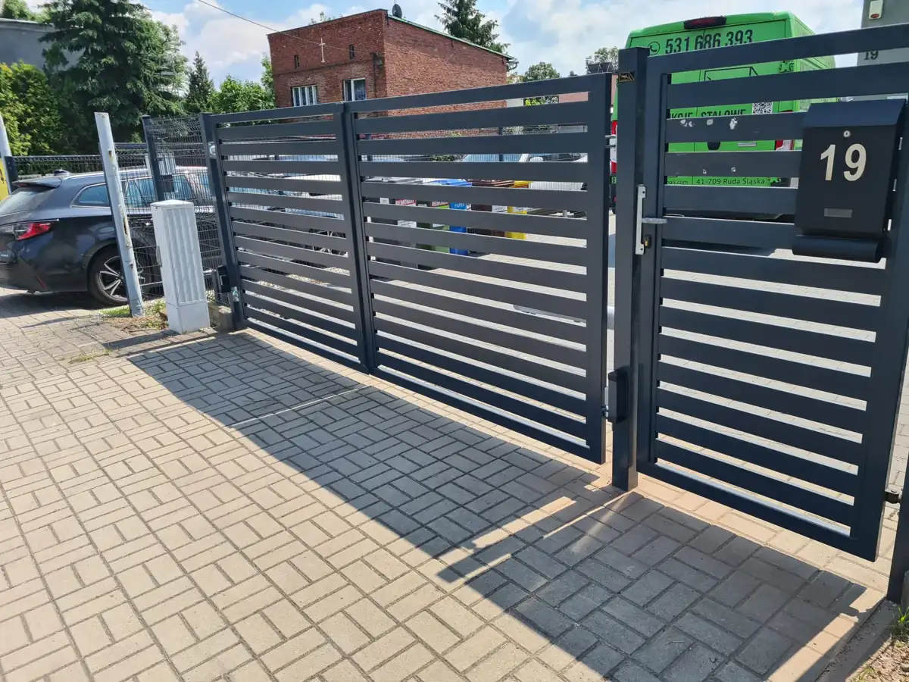

01
Bramy przesuwne
Wygodne rozwiązanie dla posesji z miejscem wzdłuż ogrodzenia. Konstrukcja i wypełnienie dopasowane do wjazdu.

Oferta
Od konstrukcji na wymiar po montaż i automatykę — dobieramy całość do wjazdu, budynku i sposobu użytkowania.
Zakres prac
Każdy projekt wyceniamy indywidualnie po ustaleniu wymiarów, wzoru, koloru i zakresu montażu.
Wygodne rozwiązanie dla posesji z miejscem wzdłuż ogrodzenia. Konstrukcja i wypełnienie dopasowane do wjazdu.

Klasyczne i solidne bramy wykonywane pod konkretną szerokość wjazdu oraz warunki na działce.

Napędy, sterowanie i elementy bezpieczeństwa zwiększające wygodę codziennego użytkowania.

Stalowe fronty i przęsła spójne z bramą, furtką oraz charakterem budynku.

Funkcjonalne wejścia z dopasowanym wzorem, kolorem, zamkiem i przygotowaniem pod osprzęt.

Balustrady, konstrukcje i indywidualne elementy uzupełniające realizację przy domu lub firmie.
 Spójny front posesji
Spójny front posesjiDobór rozwiązania
Wymiary, typ otwierania, podział przęseł i wykończenie zależą od konkretnego miejsca. Dzięki temu gotowy zestaw dobrze wygląda i wygodnie działa.
Przed wyceną
Kilka prostych informacji pozwoli szybciej określić najlepsze rozwiązanie.
Pokaż wjazd, istniejące słupki, ogrodzenie i otoczenie montażu.
Podaj szerokość wjazdu i przybliżoną wysokość planowanej bramy.
Napisz, czy potrzebujesz również furtki, przęseł lub automatyki.
Indywidualna wycena
Najłatwiej zacząć od zdjęcia miejsca montażu i krótkiego opisu planowanego zakresu.